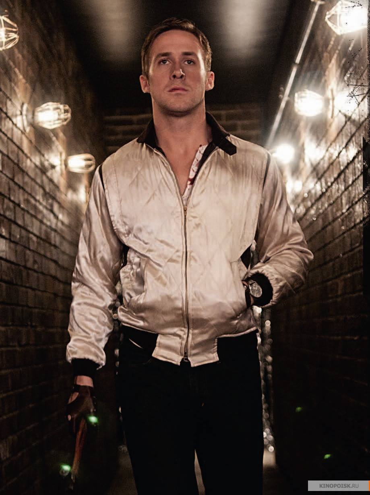

Contacts
- Location: Ontario, Canada
- E-mail: y.miky@icloud.com
- GitHub: 9m1ky
- Discord: m1ky#2845
About me
Canadian film actor and musician, two-time Oscar nominee for his roles in the films Half Nelson (2006) and La La Land (2016), winner of the Golden Globe for La La Land. Starting acting from adolescence, by the age of 40, Gosling has become one of the best Canadian actors, in demand for representatives of popular cinema and in copyright films. Ryan became widely known for his roles in the films Fanatic (2001), United States of Leland (2003), The Notebook (2004), Half Nelsonel (2006), Fracture (2007), This Stupid Love (2011), Drive (2011),The Nice Guys (2016), La La Land (2016), Blade Runner 2049 (2017) , "Man on the Moon" (2018).
Skills
- Actor
- Musician
- Restaurateur
- Advocate
Education
Code example
<h1> Hello World </h1>
English
B1